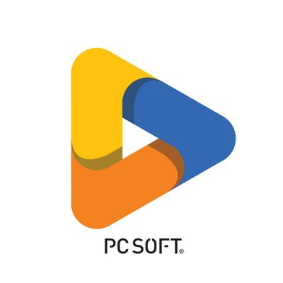

Présentation
Ce projet avait pour objectif de construire une méthode fiable pour tester des lecteurs UHF. Il fallait comprendre le fonctionnement du lecteur, définir une procédure reproductible, puis développer une application facilitant l'exécution des tests et le suivi des résultats.
Le travail a aussi permis d'identifier une configuration de référence afin de comparer les lecteurs et de mieux qualifier les corrections à effectuer.
Membres
- 1 BUT3 parcours A
Compétences techniques

Windev
Difficultés et réussites
La difficulté principale était de transformer le fonctionnement réel du lecteur en procédure de test claire. Le projet a renforcé ma capacité à analyser un équipement, à formaliser une démarche et à corriger progressivement les problèmes observés.
Timeline du projet
-
février 2025
Analyse
- Prise en main du lecteur
- Compréhension des conditions de test
- Définition de la procédure
-
mars 2025 - avril 2025
Tests et corrections
- Création de l'application de test
- Exécution des tests
- Recherche d'une configuration de référence